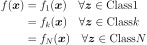
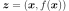
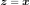
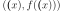

ExpertMixture¶
-
class
ExpertMixture(*args)¶ Expert mixture defining a piecewise function according to a classifier.
This implements an expert mixture which is a piecewise function defined by the collection of functions given in basis and according to a classifier:

where the
 classes are defined by the classifier.
classes are defined by the classifier.In supervised mode the classifier partitions the input and output space at once:

whereas in non-supervised mode only the input space is partitioned:

Parameters: - basis : sequence of
Function A basis
- classifier :
Classifier A classifier
- supervised : bool (default=True)
In supervised mode, the classifier partitions the space of  whereas in non-supervised mode the classifier only partitions the input space.
See also
Notes
The number of experts must match the number of classes of the classifier.
Examples
>>> import openturns as ot >>> R = ot.CorrelationMatrix(2) >>> R[0, 1] = -0.99 >>> d1 = ot.Normal([-1.0, 1.0], [1.0, 1.0], R) >>> R[0, 1] = 0.99 >>> d2 = ot.Normal([1.0, 1.0], [1.0, 1.0], R) >>> distribution = ot.Mixture([d1, d2], [1.0]*2) >>> classifier = ot.MixtureClassifier(distribution) >>> f1 = ot.SymbolicFunction(['x'], ['-x']) >>> f2 = ot.SymbolicFunction(['x'], ['x']) >>> experts = [f1, f2] >>> evaluation = ot.ExpertMixture(experts, classifier) >>> moe = ot.Function(evaluation) >>> print(moe([-0.3])) [0.3] >>> print(moe([0.1])) [0.1]
Methods
draw(*args)Draw the output of function as a Graph.getCallsNumber()Accessor to the number of times the function has been called. getClassName()Accessor to the object’s name. getClassifier()Accessor the classifier. getDescription()Accessor to the description of the inputs and outputs. getExperts()Accessor the basis. getId()Accessor to the object’s id. getInputDescription()Accessor to the description of the inputs. getInputDimension()Accessor to the number of the inputs. getMarginal(*args)Accessor to marginal. getName()Accessor to the object’s name. getOutputDescription()Accessor to the description of the outputs. getOutputDimension()Accessor to the number of the outputs. getParameter()Accessor to the parameter values. getParameterDescription()Accessor to the parameter description. getParameterDimension()Accessor to the dimension of the parameter. getShadowedId()Accessor to the object’s shadowed id. getVisibility()Accessor to the object’s visibility state. hasName()Test if the object is named. hasVisibleName()Test if the object has a distinguishable name. isActualImplementation()Accessor to the validity flag. parameterGradient(inP)Gradient against the parameters. setClassifier(classifier)Accessor the classifier. setDescription(description)Accessor to the description of the inputs and outputs. setExperts(experts)Accessor the basis. setInputDescription(inputDescription)Accessor to the description of the inputs. setName(name)Accessor to the object’s name. setOutputDescription(outputDescription)Accessor to the description of the outputs. setParameter(parameters)Accessor to the parameter values. setParameterDescription(description)Accessor to the parameter description. setShadowedId(id)Accessor to the object’s shadowed id. setVisibility(visible)Accessor to the object’s visibility state. __call__ -
__init__(*args)¶ Initialize self. See help(type(self)) for accurate signature.
-
draw(*args)¶ Draw the output of function as a
Graph.- Available usages:
draw(inputMarg, outputMarg, CP, xiMin, xiMax, ptNb)
draw(firstInputMarg, secondInputMarg, outputMarg, CP, xiMin_xjMin, xiMax_xjMax, ptNbs)
draw(xiMin, xiMax, ptNb)
draw(xiMin_xjMin, xiMax_xjMax, ptNbs)
Parameters: - outputMarg, inputMarg : int,

outputMarg is the index of the marginal to draw as a function of the marginal with index inputMarg.
- firstInputMarg, secondInputMarg : int,

In the 2D case, the marginal outputMarg is drawn as a function of the two marginals with indexes firstInputMarg and secondInputMarg.
- CP : sequence of float
Central point.
- xiMin, xiMax : float
Define the interval where the curve is plotted.
- xiMin_xjMin, xiMax_xjMax : sequence of float of dimension 2.
In the 2D case, define the intervals where the curves are plotted.
- ptNb : int
 or list of ints of dimension 2
or list of ints of dimension 2 
The number of points to draw the curves.
Notes
We note
 where
where  and
and
 ,
with and
,
with and  .
.- In the first usage:
Draws graph of the given 1D outputMarg marginal
 as a function of the given 1D inputMarg
marginal with respect to the variation of
as a function of the given 1D inputMarg
marginal with respect to the variation of  in the interval
, when all the other components of
in the interval
, when all the other components of
 are fixed to the corresponding ones of the central point CP.
Then it draws the graph:
are fixed to the corresponding ones of the central point CP.
Then it draws the graph:
![t\in [x_i^{min}, x_i^{max}] \mapsto f_k(CP_1, \dots, CP_{i-1}, t, CP_{i+1} \dots, CP_n)](../../../_images/math/9060bdd2408ce11893cc9439c1b9dea54d9a19ad.svg) .
.- In the second usage:
Draws the iso-curves of the given outputMarg marginal
 as a
function of the given 2D firstInputMarg and secondInputMarg marginals
with respect to the variation of
as a
function of the given 2D firstInputMarg and secondInputMarg marginals
with respect to the variation of  in the interval
in the interval
![[x_i^{min}, x_i^{max}] \times [x_j^{min}, x_j^{max}]](../../../_images/math/33b6603418e986a83e52c562e0359c5fb9f121c3.svg) , when all the
other components of are fixed to the corresponding ones of the
central point CP. Then it draws the graph:
, when all the
other components of are fixed to the corresponding ones of the
central point CP. Then it draws the graph:
![(t,u) \in [x_i^{min}, x_i^{max}] \times [x_j^{min}, x_j^{max}] \mapsto f_k(CP_1, \dots, CP_{i-1}, t, CP_{i+1}, \dots, CP_{j-1}, u, CP_{j+1} \dots, CP_n)](../../../_images/math/a1f0b08ca380465aadbe8ddc77dc801e9e991fa3.svg) .
.- In the third usage:
The same as the first usage but only for function
 .
.- In the fourth usage:
The same as the second usage but only for function
 .
.Examples
>>> import openturns as ot >>> from openturns.viewer import View >>> f = ot.SymbolicFunction(['x'], ['sin(2*pi_*x)*exp(-x^2/2)']) >>> graph = f.draw(-1.2, 1.2, 100) >>> View(graph).show()
-
getCallsNumber()¶ Accessor to the number of times the function has been called.
Returns: - calls_number : int
Integer that counts the number of times the function has been called since its creation.
-
getClassName()¶ Accessor to the object’s name.
Returns: - class_name : str
The object class name (object.__class__.__name__).
-
getClassifier()¶ Accessor the classifier.
Returns: - classifier :
Classifier The classifier.
- classifier :
-
getDescription()¶ Accessor to the description of the inputs and outputs.
Returns: - description :
Description Description of the inputs and the outputs.
Examples
>>> import openturns as ot >>> f = ot.SymbolicFunction(['x1', 'x2'], ... ['2 * x1^2 + x1 + 8 * x2 + 4 * cos(x1) * x2 + 6']) >>> print(f.getDescription()) [x1,x2,y0]
- description :
-
getExperts()¶ Accessor the basis.
Returns: - basis : collection of
Function The collection of functions .
- basis : collection of
-
getId()¶ Accessor to the object’s id.
Returns: - id : int
Internal unique identifier.
-
getInputDescription()¶ Accessor to the description of the inputs.
Returns: - description :
Description Description of the inputs.
Examples
>>> import openturns as ot >>> f = ot.SymbolicFunction(['x1', 'x2'], ... ['2 * x1^2 + x1 + 8 * x2 + 4 * cos(x1) * x2 + 6']) >>> print(f.getInputDescription()) [x1,x2]
- description :
-
getInputDimension()¶ Accessor to the number of the inputs.
Returns: - number_inputs : int
Number of inputs.
Examples
>>> import openturns as ot >>> f = ot.SymbolicFunction(['x1', 'x2'], ... ['2 * x1^2 + x1 + 8 * x2 + 4 * cos(x1) * x2 + 6']) >>> print(f.getInputDimension()) 2
-
getMarginal(*args)¶ Accessor to marginal.
Parameters: - indices : int or list of ints
Set of indices for which the marginal is extracted.
Returns: - marginal :
Function Function corresponding to either
 or
or
 , with
, with  and
and  .
.
-
getName()¶ Accessor to the object’s name.
Returns: - name : str
The name of the object.
-
getOutputDescription()¶ Accessor to the description of the outputs.
Returns: - description :
Description Description of the outputs.
Examples
>>> import openturns as ot >>> f = ot.SymbolicFunction(['x1', 'x2'], ... ['2 * x1^2 + x1 + 8 * x2 + 4 * cos(x1) * x2 + 6']) >>> print(f.getOutputDescription()) [y0]
- description :
-
getOutputDimension()¶ Accessor to the number of the outputs.
Returns: - number_outputs : int
Number of outputs.
Examples
>>> import openturns as ot >>> f = ot.SymbolicFunction(['x1', 'x2'], ... ['2 * x1^2 + x1 + 8 * x2 + 4 * cos(x1) * x2 + 6']) >>> print(f.getOutputDimension()) 1
-
getParameterDescription()¶ Accessor to the parameter description.
Returns: - parameter :
Description The parameter description.
- parameter :
-
getParameterDimension()¶ Accessor to the dimension of the parameter.
Returns: - parameter_dimension : int
Dimension of the parameter.
-
getShadowedId()¶ Accessor to the object’s shadowed id.
Returns: - id : int
Internal unique identifier.
-
getVisibility()¶ Accessor to the object’s visibility state.
Returns: - visible : bool
Visibility flag.
-
hasName()¶ Test if the object is named.
Returns: - hasName : bool
True if the name is not empty.
-
hasVisibleName()¶ Test if the object has a distinguishable name.
Returns: - hasVisibleName : bool
True if the name is not empty and not the default one.
-
isActualImplementation()¶ Accessor to the validity flag.
Returns: - is_impl : bool
Whether the implementation is valid.
-
parameterGradient(inP)¶ Gradient against the parameters.
Parameters: - x : sequence of float
Input point
Returns: - parameter_gradient :
Matrix The parameters gradient computed at x.
-
setClassifier(classifier)¶ Accessor the classifier.
Parameters: - classifier :
Classifier The classifier.
- classifier :
-
setDescription(description)¶ Accessor to the description of the inputs and outputs.
Parameters: - description : sequence of str
Description of the inputs and the outputs.
Examples
>>> import openturns as ot >>> f = ot.SymbolicFunction(['x1', 'x2'], ... ['2 * x1^2 + x1 + 8 * x2 + 4 * cos(x1) * x2 + 6']) >>> print(f.getDescription()) [x1,x2,y0] >>> f.setDescription(['a','b','y']) >>> print(f.getDescription()) [a,b,y]
-
setInputDescription(inputDescription)¶ Accessor to the description of the inputs.
Returns: - description :
Description Description of the inputs.
- description :
-
setName(name)¶ Accessor to the object’s name.
Parameters: - name : str
The name of the object.
-
setOutputDescription(outputDescription)¶ Accessor to the description of the outputs.
Returns: - description :
Description Description of the outputs.
- description :
-
setParameter(parameters)¶ Accessor to the parameter values.
Parameters: - parameter : sequence of float
The parameter values.
-
setParameterDescription(description)¶ Accessor to the parameter description.
Parameters: - parameter :
Description The parameter description.
- parameter :
-
setShadowedId(id)¶ Accessor to the object’s shadowed id.
Parameters: - id : int
Internal unique identifier.
-
setVisibility(visible)¶ Accessor to the object’s visibility state.
Parameters: - visible : bool
Visibility flag.
- basis : sequence of